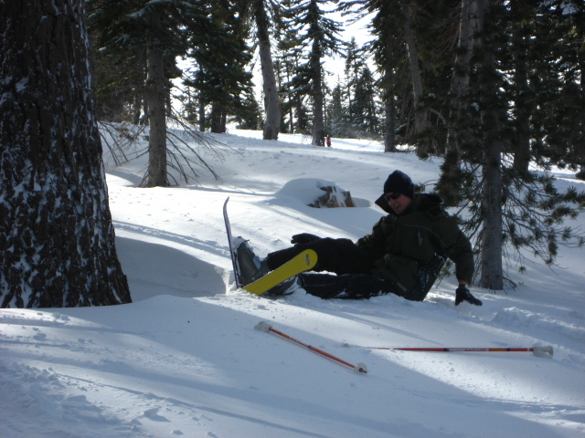
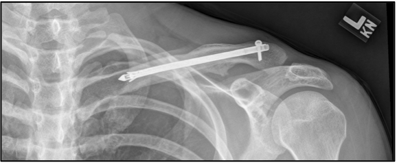

Orthopedics
Clavicle Bone Fractures: Anatomy, Classification, Clinical Features and Treatment
Source presentation · 6 min read
Edits save on this browser. Download a copy for your records.
Fractures of The Clavicle


Overview
- Fractures of the clavicle are common accounting up to 10% of all fractures and they are the most common fracture in children
- They result from either a direct blow to the clavicle, or from forces that are transmitted after a fall on the outstretched hand or fall on the shoulder
Anatomy of the clavicle
- Irregular S shaped bone
- Its function is to hold the shoulder joint in a functional position away from the chest wall
- It connects the manubrium of the sternum (through SCJ) to the acromion of the scapula (through ACJ)
- It is stabilized by the coracoclavicular ligaments (which include the conoid and trapezoid ligaments)
Classification
- Clavicle fractures are classified according to their location on the clavicle:
- Middle third fractures 75%
- Lateral third fractures 22%
- Medial third fractures 3%
- Lateral third fractures are subclassified according to the Neer classification
Neer classification
- Most commonly used classification for lateral third clavicular fractures
- Classifies these fractures into 5 types according to stability, degree of displacement and treatment recommendation
- Type I
- Type II A
- Type II B
- Type III
- Type IV
- Type V
- Type I
- Fracture line is lateral to CC ligaments
- Minimal displacement
- CC ligament (conoid and trapezoid) both intact
- Stable fracture
- Requires NON operative treatment
- Type II A
- Fracture line is medial to CC ligaments
- significant displacement
- CC ligament (conoid and trapezoid) both intact
- unstable fracture
- Requires Operative treatment
- Type II B
- Fracture line is between the CC ligaments resulting in a torn conoid and intact trapezoid
- Medial clavicle significantly displaced
- Unstable fracture
- Requires Operative treatment
- Type III
- Distal clavicular fracture extending into the AC joint (intra articular)
- Minimal displacement
- CC ligament (conoid and trapezoid) both intact
- Stable fracture
- Requires NON operative treatment
- Type IV
- Distal transverse clavicular fracture involving the physis (Salter-Harris type I)
- Medial clavicle is superiorly displaced
- CC ligament (conoid and trapezoid) both intact
- Stable fracture
- Requires NON operative treatment
- Type V
- Comminuted fracture in distal clavicle
- Medial clavicle significantly displaced
- CC ligament (conoid and trapezoid) both intact and attached to inferior clavicle fragment
- unstable fracture
- Requires Operative treatment
Clinical features
- Patient present with history of fall
- Patient complain of pain and crepitus at the fracture site
- Patient arm is adducted to the chest wall and supported by the other hand to prevent movement
- In middle third fractures, the lateral fragment is pulled down by the weight of the arm and medial fragment is pulled up by muscle action leading to significant displacement (depression & shortening) and subsequently deformity
- Look for tenting skin over the displaced fragment (indication for urgent reduction)
- It is important to check brachial pulse to make sure there is no vascular injury and also auscultate the chest searching for pneumothorax
- Comparing injured and uninjured sides gives you an idea of the severity of displacement
- Excluding a major rotator cuff tear is possible by active shoulder abduction to 45 degrees although it is painful
- Radiographic analysis requires an AP and 20 degree cephalic tilt clavicle X rays and other views may also be needed
- CT scan maybe needed if the fracture in the SC joint
- Closed reduction is not recommended (high risk of damaging adjacent structures)
- Figure of eight bandage is not recommended
- Initially immobilize the fracture by a sling
Definitive management
- Middle third fractures (most common)
- Undisplaced fractures are treated non operatively with sling immobilization (for 2-3 wks) and patient advised to mobilize the limb as soon as pain allows
- Displaced fractures are either treated operatively or non operatively depending on degree of displacement, internal fixation is used more nowadays to treat those fractures, especially the ones with severe displacement, comminution or shortening


- Lateral third fractures
- Undisplaced fractures associated intact CC ligaments are treated non operatively with sling immobilization (2-3 wks)
- Displaced fractures associated with disrupted CC ligaments are mostly treated operatively due to the high non union and malunion rates associated with non operative treatment (some specialists reserve surgery for patients with symptomatic non union)
- Medial third fractures (rare)
- They are managed non operatively unless the fracture is displaced and threatens injury or injured a mediastinal structure
- Surgery
Indications:
- Open fractures
- Impending skin tenting injury
- Severe displacement
- Severe comminution
- Symptomatic non union
- Average time to heal (union) after surgery: 6-8 weeks
Complications
Early
- Pneumothorax
- Subclavian vessel injury
- Brachial plexus injury
- All of these are RARE
Late
- Non union: occur in around 10% of displaced fractures, risk factors include comminution, displacement, elderly patient and female sex
- Symptomatic non union treated with internal fixation and bone grafting if needed
- Malunion: occur especially when there is shortening type of displacement for > 1.5 cm
- Stiffness of the shoulder: common but temporary resolve with exercising
Continue learning
Practice the topics covered in this lecture.